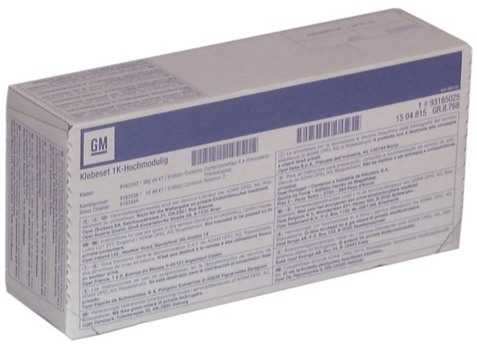

93 165 025 Adhesive Kit Rear Window CV
93 165 025 Adhesive Kit Rear Window CV

Specifications
1 Betaseal 2003, 300 ml
1 Betaclean 3300, cloth
1 Betaprime 5500, 10 ml
Saab application
For glued rear window on Saab 900 Convertible M95-.
Packaging
1
Transport
The product is classified as dangerous goods when transporting. Special regulations apply to packaging, marking and transport, therefore existing lead times cannot be guaranteed.
Directives
The product is hazardous to personal health. May cause allergic reaction if inhaled. People who are allergic to isocyanates and in particular those who have asthma or other respiratory disorders should not handle isocyanates. Extremely flammable. Irritates eyes. Repeated contact can give dry or cracked skin. Fumes can make you drowsy and taste. Avoid inhaling fumes. In case of contact with the skin, wash immediately with soap and water. Avoid contact with the skin and eyes. Use suitable protective clothing and gloves, protective goggles or face shield.